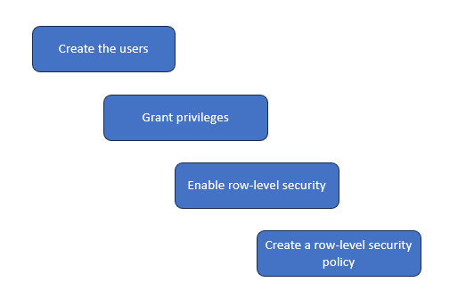
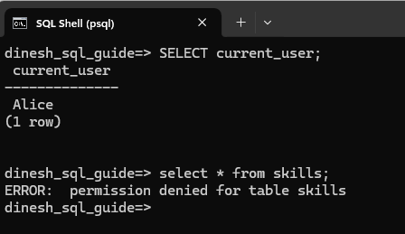
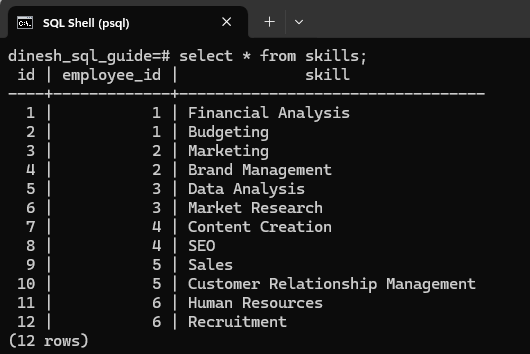
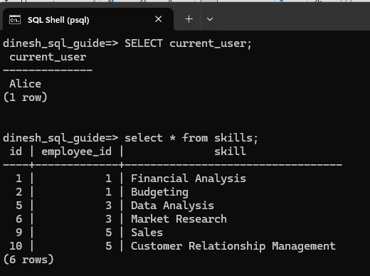
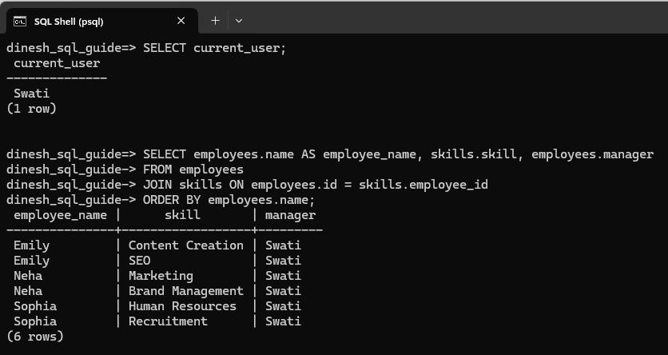

Implementing Access Control with Row-Level Security in PostgreSQL
Consider this scenario: Managers, Alice and Swati, can only see the skills of their direct reports. For example, Alice can see the skills of employees who report to her and cannot see the skills of employees who report to Swati. To implement this scenario, we'll create the users (Alice and Swati), grant privileges to both, and implement the row-level security so that each manager can only see the skills of their direct reports.

Create Tables and Add Data to the Tables
Create an employees table and a skills table to store the relevant data:
CREATE TABLE employees (
id SERIAL PRIMARY KEY,
name VARCHAR(50),
manager VARCHAR(50)
);
CREATE TABLE skills (
id SERIAL PRIMARY KEY,
employee_id INT REFERENCES employees(id),
skill VARCHAR(50)
);
Add data into the tables:
INSERT INTO employees (name, manager) VALUES
('Rajesh', 'Alice'),
('Neha', 'Swati'),
('Michael', 'Alice'),
('Emily', 'Swati'),
('Vikram', 'Alice'),
('Sophia', 'Swati');
INSERT INTO skills (employee_id, skill) VALUES
(1, 'Financial Analysis'),
(1, 'Budgeting'),
(2, 'Marketing'),
(2, 'Brand Management'),
(3, 'Data Analysis'),
(3, 'Market Research'),
(4, 'Content Creation'),
(4, 'SEO'),
(5, 'Sales'),
(5, 'Customer Relationship Management'),
(6, 'Human Resources'),
(6, 'Recruitment');
Create Users
In PostgreSQL, a user is essentially a role with the LOGIN attribute. Use the CREATE ROLE command to create the users. We want the role names to be case-sensitive and to appear exactly as we define it. For that, use double quotes around the role name:
CREATE ROLE “Alice” WITH LOGIN PASSWORD 'password_for_alice';
CREATE ROLE “Swati” WITH LOGIN PASSWORD 'password_for_swati';
Ensure that you choose a strong password for each user.
Grant Privileges
The users, Alice and Swati, won't have access to the employees and skills tables. For example, if Alice logs in and tries to query the skills table, she will get a permission denied error message:

Use the GRANT command to assign privileges. There are different kinds of privileges such as SELECT, INSERT, UPDATE, and DELETE. To give Alice and Swati view access to the tables, we'll grant them SELECT privilege:
GRANT SELECT ON employees TO “Alice”, “Swati”;
GRANT SELECT ON skills TO “Alice”, “Swati”;
Enable Row-Level Security
We don't want the two users to access the skills of all employees. For example, because we gave her SELECT privilege, Alice can now use a select query to view all employees' skills:

We want to restrict data access on the skills table based on user roles. So, enable row-level security on the skills table:
ALTER TABLE skills ENABLE ROW LEVEL SECURITY;
Create a Row-Level Security Policy
Define a policy that allows Alice and Swati to see only their employees' skills:
CREATE POLICY employee_skills_policy
ON skills
FOR SELECT
USING (employee_id IN (SELECT id FROM employees WHERE manager = current_user));
Log In and Test
Users can log in, and when they access the skills table, they will only see the skills of their direct reports. For instance, when Alice logs in and does a select query on skills, she can only see the skills of her direct reports:

Swati logs in and runs a select query to see both employee names and their skills. The query displays this information only for those employees who report to her:

Congratulations! We've implemented a basic access control scenario in PostgreSQL. We started by creating user roles using the CREATE ROLE command. We then granted SELECT access to these users so that they have view access to the tables. Finally, we configured a row-level security policy to ensure each user could only access the data they were permitted to see.